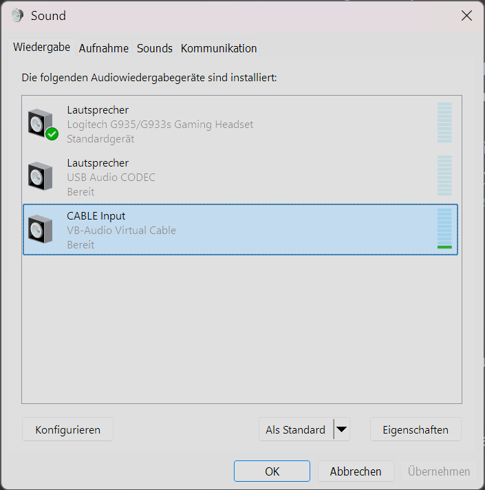
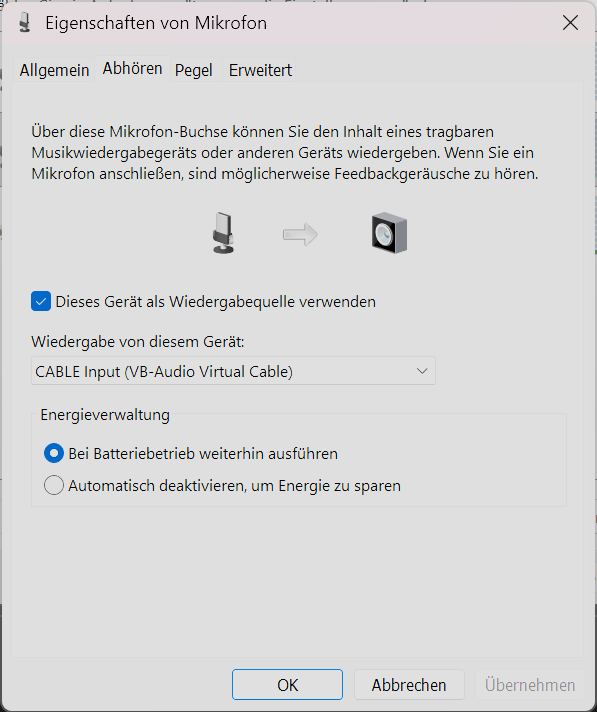
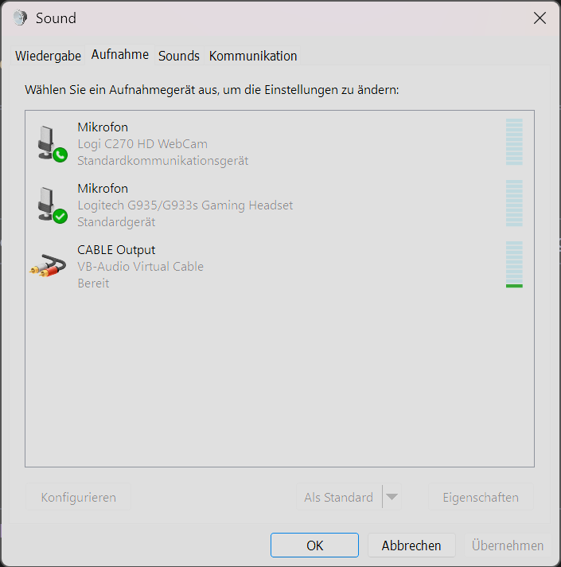
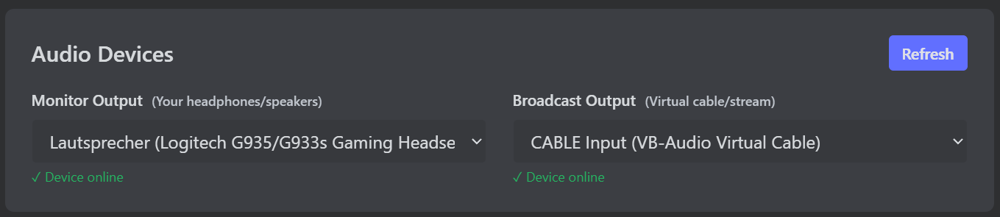
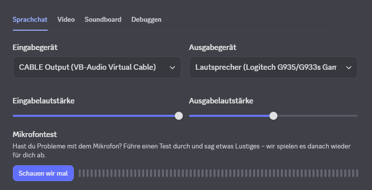
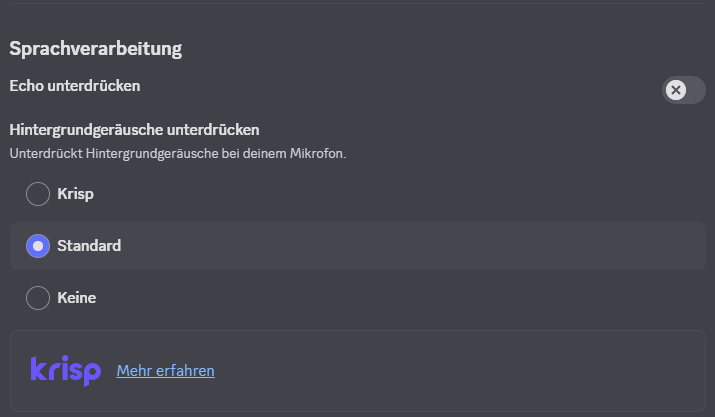

🎯Was ist Sonic Deck?
Sonic Deck ist eine Desktop-Soundboard-Anwendung, die speziell für Streamer, Gamer und Content Creator entwickelt wurde. Die App ermöglicht es dir, Sounds gleichzeitig auf zwei verschiedene Audio-Ausgänge zu spielen (z.B. deine Kopfhörer UND deinen Stream).
🎧 Dual-Audio Routing
Spiele Sounds gleichzeitig auf zwei Geräte (Headset + Virtual Audio Cable)
📁 Sound-Bibliothek
Organisiere deine Sounds in Kategorien mit Drag & Drop Import
✂️ Audio-Trimming
Schneide Sounds zu ohne die Original-Datei zu verändern
⚡ Blitzschnell
Rust-Backend für minimale Latenz und sofortige Wiedergabe
💾Installation
Variante 1: Setup.exe (Kleiner, 2.96 MB)
-
Installer herunterladen
Datei:Sonic_Deck_0.6.0_x64-setup.exe -
Windows SmartScreen umgehen
Beim ersten Start zeigt Windows eine Warnung ("Windows hat diesen PC geschützt").
Klicke auf "Weitere Informationen" → "Trotzdem ausführen"
Das ist normal bei nicht-signierten Apps -
Installationsort wählen
Standard:C:\Users\[DeinName]\AppData\Local\Sonic Deck
Du kannst den Pfad ändern, wenn du möchtest -
Installation abschließen
Klicke durch den Installer → Fertig!
Variante 2: MSI Installer (4.43 MB)
Sonic_Deck_0.6.0_x64_en-US.msiFunktioniert genauso wie die .exe - Doppelklick → Installation folgen.
MSI = Windows Installer Package (alternativer Format)
💡 Was ist der Unterschied?
- .exe Setup: Kompakter (2.96 MB), modernes Installer-Format
- .msi Installer: Größer (4.43 MB), unterstützt auch stille Installation über Kommandozeile
- Empfehlung: Nimm einfach die .exe - beide installieren das gleiche Programm!
🚀Erste Schritte
1. Audio-Geräte einrichten
-
Sonic Deck starten
Das Hauptfenster öffnet sich mit dem Dashboard -
Zu den Einstellungen gehen
Klicke in der Sidebar auf "Settings" (Zahnrad-Symbol) -
Ausgabegeräte wählen
- Monitor Output: Deine Kopfhörer/Lautsprecher (was DU hören möchtest)
- Broadcast Output: Virtual Audio Cable, OBS Audio, etc. (was dein STREAM hören soll)
-
Lautstärke einstellen
Setze die Default Volume auf 50% (sicherer Start-Wert)
Folge der Anleitung unten, um VB-Cable einzurichten.
🔌Virtual Audio Cable einrichten (Für Streaming)
Wenn du Sonic Deck für Streaming nutzen möchtest, brauchst du ein Virtual Audio Cable. Damit können die Sounds zu deinem Stream/Discord/etc. geroutet werden.
Schritt 1: VB-Audio Virtual Cable installieren
-
Download VB-Cable
📥 Direkter Download: VBCABLE_Driver_Pack45.zip
Oder besuche: vb-audio.com/Cable (kostenlos, Donation optional) -
ZIP entpacken
Rechtsklick auf die ZIP → "Alle extrahieren" -
Setup starten
Rechtsklick aufVBCABLE_Setup_x64.exe→ "Als Administrator ausführen" -
Installation abschließen
Klicke auf "Install Driver" → Warte bis "Installation completed" erscheint → OK -
PC neu starten (empfohlen)
Damit das virtuelle Gerät korrekt erkannt wird
Schritt 2: Windows 11 Sound-Einstellungen öffnen
Drücke
Win + R → Tippe
mmsys.cpl → EnterDas öffnet direkt die klassischen Sound-Einstellungen!
Lasse deine normalen Kopfhörer/Lautsprecher als Standard in Windows.
- Rechtsklick auf Lautsprecher-Symbol in der Taskleiste
- Klicke auf "Soundeinstellungen"
- Scrolle runter zu "Erweitert"
- Klicke auf "Weitere Soundeinstellungen"
Screenshot anzeigen (Windows Sound Einstellungen)
Schritt 3: Mikrofon-Routing einrichten (Damit man DICH + Sounds hört)
Da Discord auf das Kabel hört (für die Sounds), müssen wir deine Stimme ebenfalls in dieses Kabel leiten.
-
Zum "Aufnahme"-Tab wechseln
Suche dein echtes Mikrofon (z.B. Logitech, Blue Yeti) -
Eigenschaften öffnen
Rechtsklick auf dein Mikrofon → "Eigenschaften" -
"Abhören" aktivieren
Wechsle zum Reiter "Abhören".
Setze den Haken bei "Dieses Gerät als Wiedergabequelle verwenden". -
Wiedergabegerät wählen
Im Dropdown "Wiedergabe über dieses Gerät" wähle "CABLE Input (VB-Audio Virtual Cable)".
✅ Jetzt wird deine Stimme zusammen mit den Sounds in das Kabel gesendet!Screenshot anzeigen (Mikrofon Abhören)
 - Auf Übernehmen klicken
Schritt 4: CABLE Output vorbereiten
-
Immer noch im "Aufnahme"-Tab
Suche "CABLE Output" -
CABLE Output aktivieren
Rechtsklick auf "CABLE Output" → "Aktivieren"
Falls nicht sichtbar: Rechtsklick im leeren Bereich → "Deaktivierte Geräte anzeigen"Screenshot anzeigen (Windows Aufnahme)
 -
Pegel prüfen
Rechtsklick → "Eigenschaften" → "Pegel"-Tab → Lautstärke auf 100% setzen
Schritt 5: In Sonic Deck einrichten
-
Sonic Deck öffnen
Gehe zu Settings (Zahnrad in der Sidebar) -
Monitor Output wählen
Wähle deine normalen Kopfhörer/Lautsprecher
Das ist was DU hören wirst -
Broadcast Output wählen
Wähle "CABLE Input (VB-Audio Virtual Cable)"
Das wird zu deinem Stream/Discord geroutet -
Test-Sound abspielen
Zurück zum Dashboard → Sound abspielen → Du solltest ihn hören UND OBS sollte ihn erkennenScreenshot anzeigen (Sonic Deck Settings)

Schritt 6: In Discord einrichten
- Discord öffnen → Einstellungen (Zahnrad unten links)
- Links im Menü: "Sprache & Video"
- Eingabegerät: Wähle "CABLE Output (VB-Audio Virtual Cable)"
-
Ausgabegerät: Deine normalen
Kopfhörer (z.B. Logitech G935)
Screenshot anzeigen (Discord Geräte)

-
Echo unterdrücken:
AUS schalten!
Sonst filtert Discord die Sounds aus Sonic Deck weg -
Hintergrundgeräusche unterdrücken (Krisp):
Auf "Keine" oder
"Standard" stellen
Krisp kann Sounds verfälschen/dämpfenScreenshot anzeigen (Sprachverarbeitung)
 -
Rauschunterdrückung:
"Standard" ist OK
Betrifft nur dein Mikrofon, nicht Sonic Deck
• Eingabe = Dein Mikrofon
• Ausgabe = CABLE (nicht deine Kopfhörer!)
• Echo unterdrücken = AUS
• Krisp = Keine/Standard
- Tritt einem Voice-Channel bei
- Spiele einen Sound in Sonic Deck ab
- Deine Discord-Freunde sollten den Sound hören! 🎉
Troubleshooting Virtual Cable
- CABLE Output nicht sichtbar: PC neu starten nach Installation
- Discord hört nichts: Prüfe, ob CABLE Output als Standard-Aufnahmegerät gesetzt ist
- Verzerrter Sound: Pegel in Windows auf 100%, dann in Sonic Deck Volume runter
- Echo in Discord: Dein Mikrofon nimmt die Sounds aus deinen Kopfhörern auf - Lautstärke runter!
- Andere hören sich selbst: Das ist normal wenn du ihr Audio über Sonic Deck abspielst
🚀Sounds hinzufügen & verwenden
2. Sounds hinzufügen
-
Zurück zum Dashboard
Klicke in der Sidebar auf "Dashboard" -
Kategorie erstellen
Klicke auf das + Symbol neben den Kategorie-Tabs → Namen eingeben → Enter -
Sound importieren
Methode A: Datei per Drag & Drop in die App ziehen
Methode B: "Add Sound" Button klicken → Datei auswählen
Unterstützt: MP3, WAV, OGG -
Sound bearbeiten
- Name wird automatisch aus Dateinamen generiert
- Wähle ein Emoji-Icon aus der Liste
- Setze eine Kategorie
- Optional: Custom Volume pro Sound
3. Sounds abspielen
Rechtsklick: Öffnet Kontext-Menü mit Optionen:
- ⭐ Add to Favorites / Remove Favorite
- ✏️ Edit Sound
- ✂️ Trim Audio
- 🗑️ Delete Sound
🧪Was solltest du testen?
Grundlegende Funktionen
- ✅ Sounds abspielen auf beiden Ausgängen gleichzeitig
- ✅ Mehrere Sounds parallel abspielen (Overlap-Test)
- ✅ Sound restart durch erneutes Klicken
- ✅ Kategorie-System (Erstellen, Umbenennen, Löschen)
- ✅ Drag & Drop Import (Single + Multi-File)
- ✅ Favorites-System (Stern-Icon setzen/entfernen)
Erweiterte Features
- 🎚️ Volume Boost: In Settings → "Global Volume Boost" aktivieren (1.1x - 3.0x)
- ✂️ Audio Trimming: Rechtsklick auf Sound → "Trim Audio" → Anfang/Ende trimmen → Speichern
- 📊 Waveform: Während Playback sollte oben im Header die Waveform animiert werden
- 🔄 Sound Edit: Name, Icon, Kategorie, Volume ändern
Edge Cases & Probleme finden
🔍 Bitte teste diese Szenarien:
- Sehr große Audio-Dateien (>10 MB)
- Sehr kurze Sounds (<1 Sekunde)
- Schnelles Spam-Klicken auf Sounds
- Device-Wechsel während laufender Wiedergabe
- App minimieren/maximieren während Playback
- Viele Sounds parallel abspielen (10+)
- Sound-Bibliothek mit 50+ Sounds
⚠️Bekannte Limitationen
-
Spam-Clicking: Sehr schnelles wiederholtes
Klicken (>10x/Sekunde) kann dazu führen, dass Sounds nicht
abspielen
→ Kurz warten zwischen Klicks (~100ms) für zuverlässiges Abspielen - Keine Hotkeys: Global Hotkeys sind noch nicht implementiert (geplant für Phase 5)
- Kein System Tray: App muss im Vordergrund bleiben
- Kein Autostart: Muss manuell gestartet werden
- Windows SmartScreen: Warnung erscheint, da App nicht signiert ist
💡 Warum kein Spam-Clicking?
Die App startet für jeden Sound einen eigenen Audio-Thread. Bei extremem Spam-Clicking (z.B. 20 Klicks in 1 Sekunde) kann das System nicht schnell genug reagieren und Sounds werden übersprungen. Das ist eine technische Limitierung der aktuellen Architektur.
Normal schnelles Klicken (2-5x/Sekunde) funktioniert problemlos! Nur extremes Button-Mashing ist problematisch.
📝Feedback geben
Dein Feedback ist extrem wertvoll! Bitte notiere:
🐛 Bugs
Was funktioniert nicht? Unter welchen Bedingungen tritt der Fehler auf?
💡 Verbesserungsvorschläge
Was könnte besser/einfacher sein? Welche Features fehlen dir?
✨ Was gefällt dir?
Welche Features funktionieren gut? Was macht Spaß?
🤔 UX-Probleme
Was ist verwirrend? Wo hast du nach Features gesucht?
💬 Discord: dranelixx (ID: 624679678573150219)
🐛 GitHub Issues: github.com/DraneLixX/Sonic Deck/issues
📋 Bug-Report Vorlage
Kopiere diese Vorlage und fülle sie aus:
🐛 Bug-Report für Sonic Deck v0.6.0
Problem-Beschreibung:
[Beschreibe kurz, was nicht funktioniert]
Schritte zum Reproduzieren:
1. [Erster Schritt]
2. [Zweiter Schritt]
3. [Was du gemacht hast]
Erwartetes Verhalten:
[Was sollte passieren?]
Tatsächliches Verhalten:
[Was ist stattdessen passiert?]
System-Info:
- Windows Version: [z.B. Windows 11 23H2]
- Audio-Geräte: [z.B. Realtek HD Audio + CABLE Input]
- Verwendung: [Streaming / Discord / Andere]
Log-Datei:
[X] Log-Datei ist angehängt (sonicdeck.YYYY-MM-DD.log)
[ ] Kein Log verfügbar
Zusätzliche Infos:
[Screenshots, weitere Details, wie oft es passiert, etc.]
-
Windows Version:
• DrückeWin + R→ Tippewinver→ Enter
• Kopiere die ersten beiden Zeilen aus dem Fenster -
Audio-Geräte:
• Öffne Sonic Deck → Klicke auf "Settings" (Sidebar)
• Notiere "Monitor Output" und "Broadcast Output"
🔧Troubleshooting
App startet nicht
- Prüfe, ob Antivirus die .exe blockiert
- Führe Setup als Administrator aus
- Windows Defender Ausnahme hinzufügen
Kein Ton zu hören
- Prüfe Settings → sind die richtigen Geräte ausgewählt?
- Ist die Volume auf 0%?
- Sind deine Audio-Geräte in Windows aktiviert?
- Teste mit einem einfachen Sound (z.B. kurzer Beep)
Performance-Probleme
- Cache wird automatisch gemanagt (500MB Limit)
- Bei vielen Sounds: Prüfe Task Manager → RAM-Nutzung
- Große Dateien werden im Hintergrund decodiert
Logs & Konfigurationsdateien finden
Log-Dateien: logs\sonicdeck.YYYY-MM-DD.log
- Beispiel:
sonicdeck.2025-12-20.log- Automatische tägliche Rotation (letzte 7 Tage werden behalten)
- Enthält Fehler, Warnungen und Informationen über App-Aktivitäten
- Öffnet direkt mit Doppelklick in Notepad/Editor
Konfiguration:
- settings.json (Deine Einstellungen)
- sounds.json (Sound-Bibliothek)
1. Problem reproduzieren (damit es im Log steht)
2. Öffne Windows Explorer → Eingabe:
%LOCALAPPDATA%\com.sonicdeck.app\logs3. Die neueste .log Datei (mit heutigem Datum) kopieren und mit Bug-Report senden
4. Das hilft enorm beim Debuggen! 🙏
⚙️Technische Details
Framework
Tauri v2 (Rust + Web)
Backend
Rust (cpal + symphonia)
Frontend
React 18 + TypeScript
Installiert
~14.6 MB auf der Festplatte
Speicher (RAM)
~50 MB + Cache (max 500MB)
Installer
NSIS: 3.17 MB
MSI: 4.70 MB